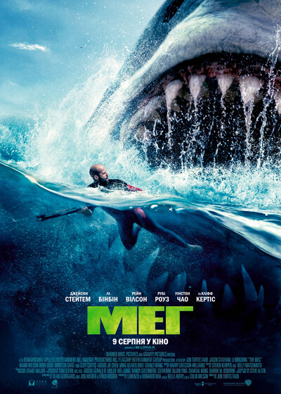
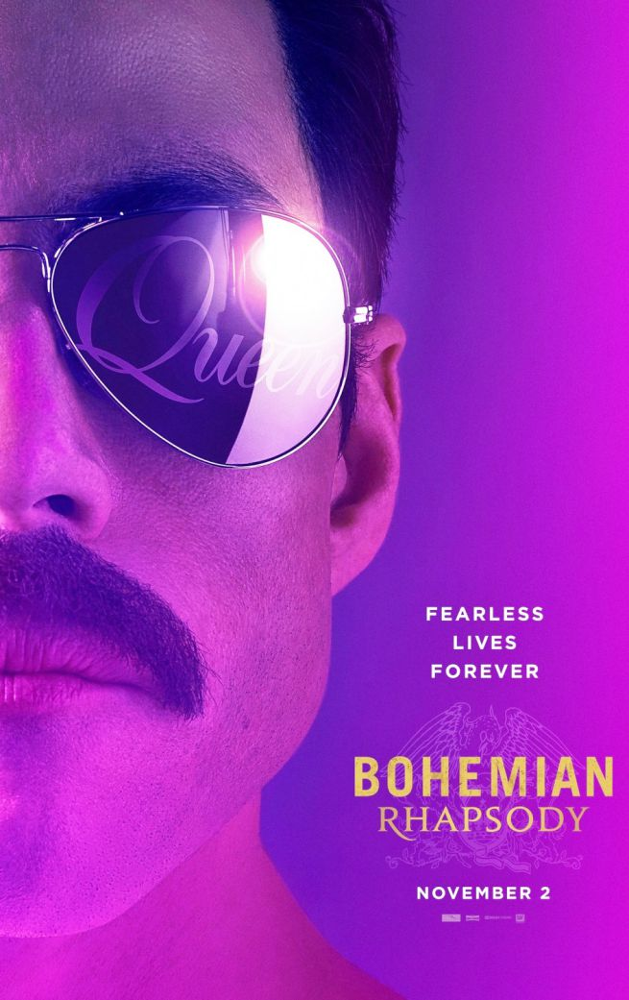
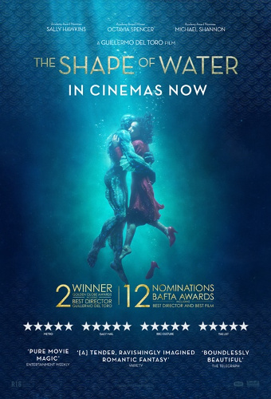

5.Мег
У минулому капітан підводного човна брав участь у вивченні морського дна. Але тепер Джонас змінив напрямок діяльності. Він спеціалізується на палеонтології. Але незважаючи на те, що занурення на глибину вже давно не викликають в нього захоплення, в пам'яті все ще вирують спогади про таємниці, приховані в цих глибинах. В ході чергової експедиції Джонас і його напарники зустрілися «віч-на-віч» з моторошним чудовиськом - мегалодоном. При цьому гігантських предків білої акули вважали повністю вимерлим видом. Джонас особисто бачив 25-ти метрове чудовисько. І нехай всі ці роки над ним сміялися, а його мемуари затаврували «науковою фантастикою», професор не зречеться своєї правди і доведе факт існування мегаладона. На носі нова експедиція. Небезпечне і важке занурення, яке зламає життя або принесе світову славу... На кону не тільки чесне ім'я Джонаса. Доля зниклого дослідного човника також залежить від результату експедиції.
4.Богемна рапсодія
Фредді - людина з неймовірними талантами, великими перспективами і прагненням до підкорення нових музичних вершин. Мільйони фанатів мріяли знову почути цей унікальний голос і чудове виконання знаменитих пісень. Завоювавши безліч сердець, Фредді став культовим музикантом свого часу. Багато жінок закохувалися в харизматичного хлопця, чий голос просто заворожував своєю мелодійністю. Але навіть прихильники не знали безлічі подробиць з його особистого життя. Коли знаменита група розпалася, деякі факти стали надбанням громадськості. Люди з близького оточення виконавця розкрили їх перед журналістами. Коли Фредді ще не був настільки відомим, він заробляв дуже мало. Грошей не вистачало навіть на покриття основних витрат. Для того, щоб якось підтримувати своє існування, він іноді вдавався до вчинення незаконних вчинків разом зі своїми товаришами. Хлопець закохався в дівчину легкої поведінки, але незабаром вирішив порвати з нею, адже такі відносини навряд чи принесли б щастя їм обом. Але вона заявила, що вагітна, через що юнак змушений піти якомога далі, не бажаючи нести відповідальність за свої вчинки.
3.Червоний горобець
Домініка завжди мріяла працювати спецагентом і виконувати різні місії. Їй відмінно вдавалося виконувати всі доручення і вона навіть отримала звання офіцера. Дівчина намагалася якнайкраще проявити себе і навіть постаратися вивести на чисту воду одного з найсильніших злочинців. Варто сказати, що їй дійсно вдалося проявити себе і вона відзначилася не тільки тим, що змогла вийти на агента ЦРУ який працює під прикриттям, а й викрити професійного американського «крота», який вже давно перебував у розшуку і постійно заважав нормально працювати місцевому уряду та правоохоронним органам. Але одного разу вся ця історія набуває досить цікавий оборот, коли дівчина починає повільно закохуватися в свою мішень. І ці почуття виявляються взаємними, тільки ось Домініка розуміє, що ні до чого хорошого ці відносини не приведуть. Оскільки чоловік небезпечний для країни і його вона особисто повинна здати в руки влади, для того щоб відправити за ґрати. Але зробити це зовсім не просто, адже вона до нього відчуває найніжніші почуття і їй би хотілося зовсім іншого результату у цій історії. Але як себе стане вести цей злочинець і чи побажає він виправитися заради коханої, щоб залишитися разом з нею? Червоний горобець 2018 дивитися онлайн українською мовою безкоштовно в хорошій якості!
2.Форма води
Події розгортаються на початку 1960-х років. Самотня німа дівчина Еліза Еспозіто працює в нічні зміни прибиральницею в секретному науково-дослідному центрі в Балтіморі. Її життя нудне і одноманітне. Але одного разу Еліза і її колега по роботі Зельда випадково дізнаються про один унікальний об'єкт - людину-амфібію, яку було знайдено в річках Південної Америки. Еліза закохується в мутанта і вирішує допомогти йому втекти ...
1.8 подруг Оушена
Більше п'яти років Деббі Оушен розробляла план найбільшого пограбування свого життя. Вона точно знає, що для нього буде потрібно, - команда кращих у своїй справі, починаючи з її давньою спільниці Лу Міллер. Разом вони збирають команду унікальних фахівців: ювелір Аміта, злодійка Констанс, шахрайка Теммі, хакер Дев'ятка і модельєр Роуз. Їх мета - 150 мільйонів доларів - в діамантах на шиї всесвітньо відомої актриси Дафни Клюгер, до якої буде прикута загальна увага на головній події року - бал в Метрополітен-музеї ...